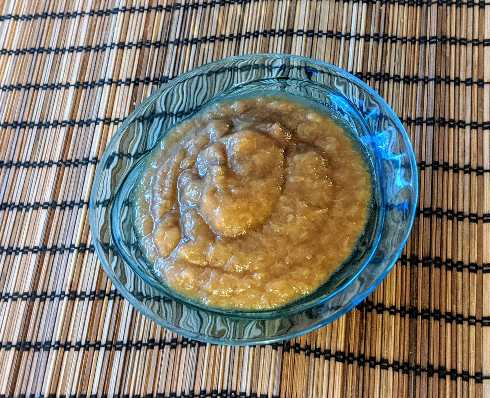

Compote pomme-rhubarbe en cuisson lente

Pour 4 personnes :
- Un bon kilo de pommes
- Trois branches de rhubarbe
- (Facultatif) Un peu de sucre vanillé
- (Facultatif) Le jus d'un demi-citron
- Éplucher et couper les pommes en morceaux grossiers. Laver et couper la rhubarbe en tronçons, après avoir enlevé le bout.
- Disposer dans une mijoteuse avec le sucre et le citron, faire cuire à réglage doux pendant une nuit.
- Mixer. Déguster tiède.
Remarque : on peut adapter cette recette pour faire d'autres compotes, par exemple pomme-poires, ou juste pommes. C'est généralement une bonne idée d'avoir un peu de variété dans ce qu'on met dans la compote, par exemple quelques poires dans une compote de pommes, quelques pommes dans une compote de poires, ou simplement différentes variétés de pommes.